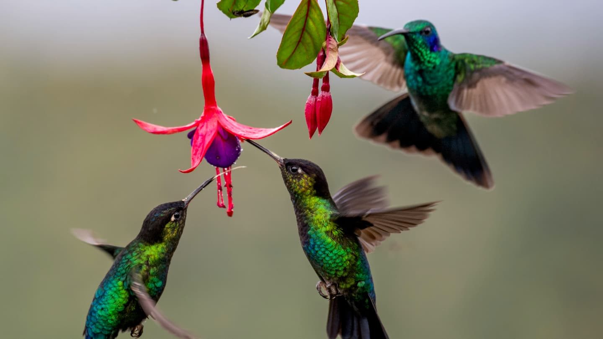
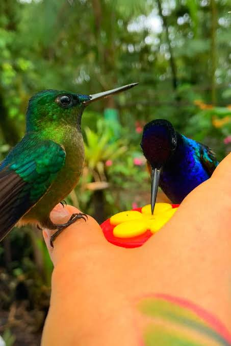
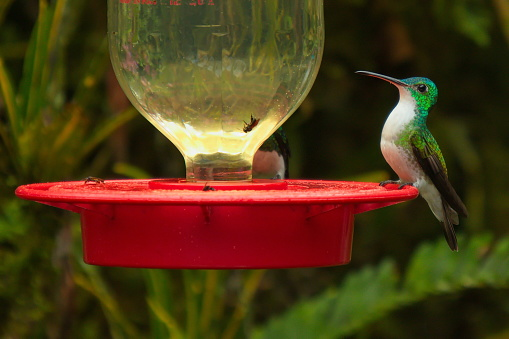

Descripción
El Jardín de Colibríes de Mindo es un espacio diseñado especialmente para la observación de estas pequeñas y fascinantes aves. Cuenta con numerosos comederos ubicados estratégicamente que atraen a decenas de especies de colibríes, permitiendo verlos y fotografiarlos a muy corta distancia. Es uno de los mejores lugares de Ecuador para el avistamiento de colibríes.
Ubicación Geográfica
Se encuentra a unos 2 km del centro de Mindo, en la vía hacia el Bosque Protector. Fácil acceso en transporte o caminando.
Actividades para realizar
- Observar muchas especies de colibríes de muy cerca
- Tomar fotografías increíbles
- Aprender sobre las diferentes especies y sus características
- Disfrutar de los jardines y el entorno natural
- Comprar alimentos para atraer a los colibríes
Galería de Imágenes


